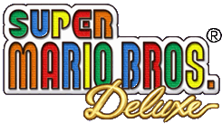
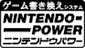

|

|
 1985,1999 Nintendo. |
||||
|  |
★スーパーマリオブラザーズデラックス
★対応機種：ゲームボーイカラー専用 ★書換え開始日：2000年3月1日（水） |
★Ｆブロック数：8 ★Ｂブロック数：1 ★商品番号：255726 ★ジャンル：アクション |

|
…… |
懐かしいファミコン版を再現しました。 セーブ機能など、屋外でのプレイに便利な機能もあります。 |
| …… |
懐かしい３２のコースに、ヨッシー発見？！ ヨッシーのたまごや、赤コインなどを、見つけるゲームです。 |
|

|
…… |
ゲームボーイカラー２台を、通信ケーブルでつなぎ、マリオとルイージが競争だ！ |

|
…… |
ポケットプリンタに対応したおまけもデラックス！ |
オリジナル｜チャレンジ｜VSゲーム｜おまけ
|
|